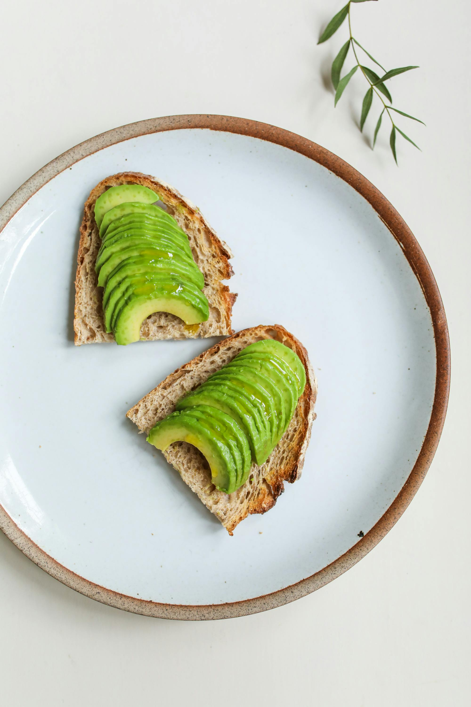

Causa (Potato Casserole)

Ingridients
- Yellow potatoes
- Aji amarillo paste (or substitute with scotch bonnet pepper)
- Vegetable oil,Lime juice
- Salt,Black pepper
- Avocado,Mayonnaise
- Canned tuna (flaked)
- Red onion (finely chopped)
- Hard-boiled eggs (optional) .
Nutrition
- calories
- 300-400
- fiber
- 4-5g
- protein
- 15-20g
- fat
- 10-15g
- carbohydrates
- 40-50g
How to Make It:
step 1
Boil the potatoes until tender, then mash them with a potato ricer or fork.
step 2
Add olive oil, aji amarillo paste (or scotch bonnet pepper), lime juice, salt, and black pepper to the mashed potatoes and mix well.
step 3
Line a mold or casserole dish with plastic wrap, then spread half of the potato mixture onto the bottom.

step 4
Layer with sliced avocado, followed by your chosen filling (tuna salad is common, but shredded chicken or vegetarian options work too).
step 5
Top with the remaining potato mixture, smooth the surface, and cover with plastic wrap.


step 6
Refrigerate for at least 30 minutes, or until firm. Invert the mold onto a plate to unmold the causa. and serve it slice and cold